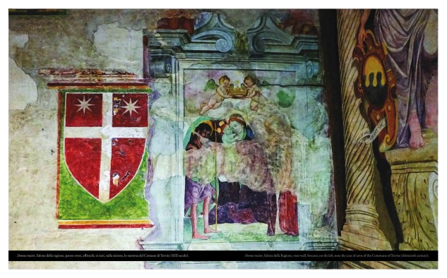
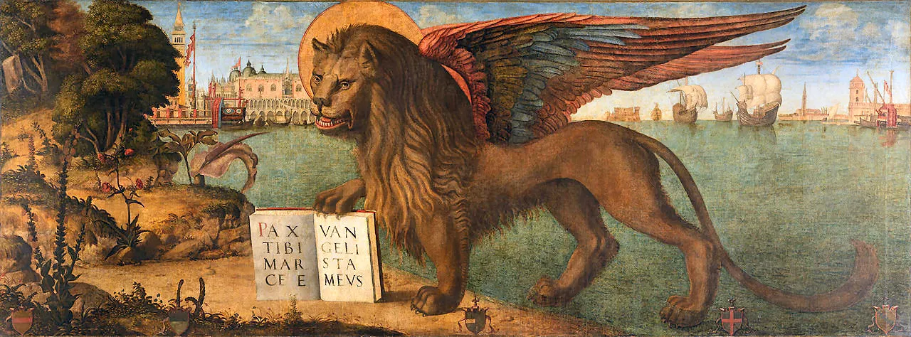
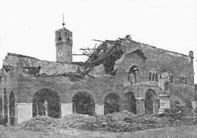

During this period, Treviso experienced its peak of cultural and political splendor. It became a powerful independent municipality, known throughout Italy as the "Marca Gioiosa et Amorosa" (the Joyous and Amorous March).
Cultural Climate: The city was a hub for "courtly life," famous for its festivals, knightly tournaments, and Provençal literature. It was the place where the nobility and the wealthy merchant class celebrated life and the arts. Urban Layout: The city’s most iconic buildings were constructed during these years, including the Palazzo dei Trecento (the seat of the city council) and the original medieval wall structure. The End of Autonomy: After a period of internal strife between factions (Guelphs and Ghibellines) and the rule of powerful local lords like the Da Romano and Da Camino families, the city realized that to survive the ambitions of its neighbors (especially the Scaligeri of Verona), it needed a powerful ally.

In 1389, Treviso voluntarily joined the Republic of Venice. This formed an unbreakable bond that lasted four centuries and completely transformed the city's appearance.
The Fortress of Venice: Treviso became the primary defensive outpost on the mainland for the Republic. In the early 1500s, to protect it from the League of Cambrai, the massive Renaissance walls were built—the ones we see today—designed by Fra’ Giocondo. The course of the Botteniga river was diverted to create a sophisticated system of floodable moats. Economy and Villas: Under the Lion of Saint Mark, Treviso prospered through agriculture and mills. Venetian nobles began building magnificent villas in the surrounding countryside, using the city as a logistical hub and a summer retreat. The Venetian Imprint: The architecture became more refined, the canals were enhanced, and the city took on that elegant, water-oriented character that still defines it today.

The 20th century deeply scarred Treviso, bringing it to the brink of total destruction before it transformed into a modern economic powerhouse.
The Good Friday Bombing: On April 7, 1944, a devastating Allied bombing raid hit the historic center. In just a few minutes, about 80% of the buildings were damaged or destroyed (including the Palazzo dei Trecento), and thousands of civilians lost their lives. It remains a profound wound in the city's soul. Reconstruction "As it was": Treviso had the strength to rebuild itself while respecting its original style, painstakingly restoring medieval frescoes and facades that seemed lost forever. The "Economic Miracle": From the 1960s onward, the city became the beating heart of one of Europe’s most productive areas (the "North-East model"). It is now linked to global brands like Benetton and De'Longhi, and is famous worldwide for Prosecco and as the birthplace of Tiramisù.